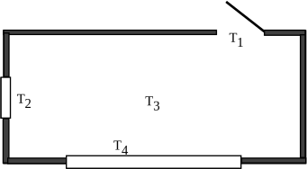

5 Using symbols
Mathematics provides a very rich language for the communication of engineering concepts and ideas, and a set of powerful tools for the solution of engineering problems. In order to use this language it is essential to appreciate how symbols are used to represent physical quantities, and to understand the rules and conventions which have been developed to manipulate these symbols.
The choice of which letters or other symbols to use is largely up to the user although it is helpful to choose letters which have some meaning in any particular context. For instance if we wish to choose a symbol to represent the temperature in a room we might use the capital letter . Similarly the lower case letter is often used to represent time. Because both time and temperature can vary we refer to and as variables.
In a particular calculation some symbols represent fixed and unchanging quantities and we call these constants. Often we reserve the letters , and to stand for variables and use the earlier letters of the alphabet, such as , and , to represent constants. The Greek letter pi, written , is used to represent the constant 3.14159.... which appears for example in the formula for the area of a circle. Other Greek letters are frequently used as symbols, and for reference, the Greek alphabet is given in Table 1.
Table 1: The Greek alphabet
| alpha | iota | rho | |||||||||
| beta | lambda | tau | |||||||||
| gamma | kappa | sigma | |||||||||
| delta | mu | upsilon | |||||||||
| epsilon | nu | phi | |||||||||
| zeta | xi | chi | |||||||||
| eta | omicron | psi | |||||||||
| theta | pi | omega | |||||||||
Mathematics is a very precise language and care must be taken to note the exact position of any symbol in relation to any other. If and are two symbols, then the quantities , , can all mean different things. In the expression you will note that the symbol is placed to the right of and slightly higher than the symbol . In this context is called a superscript. In the expression , is placed lower than and to the right of , and is called a subscript.
Example The temperature in a room is measured at four points as shown in Figure 3.
Figure 3:

Rather than use different letters to represent the four measurements we can use one symbol, , together with four subscripts to represent the temperature. Thus the four measurements are denoted by , , and .